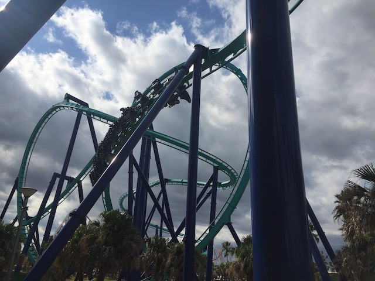
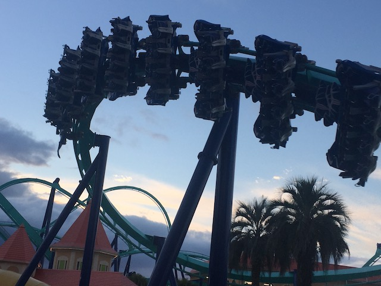
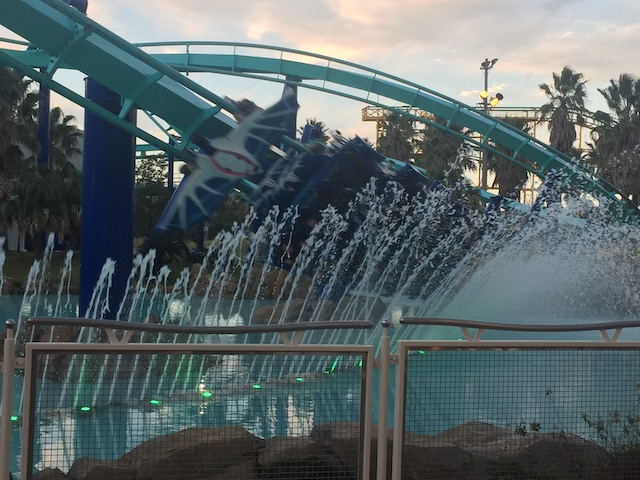
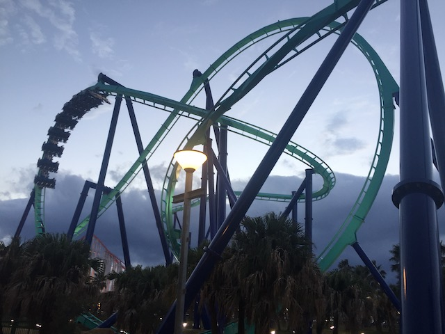
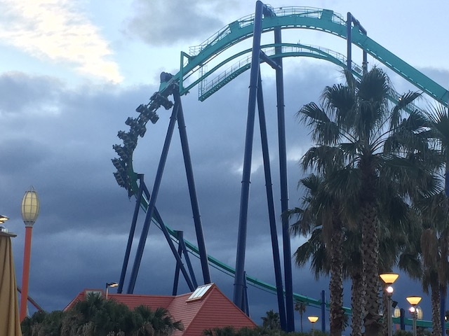
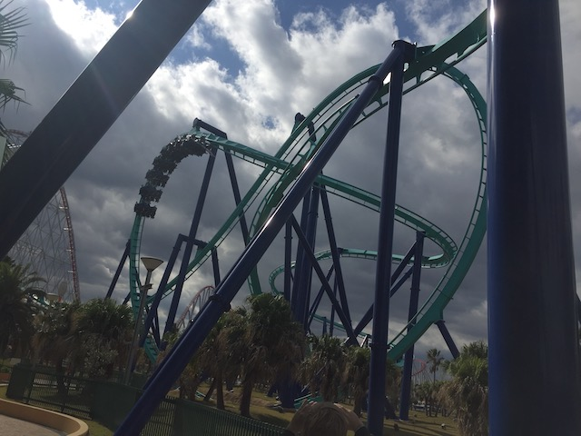
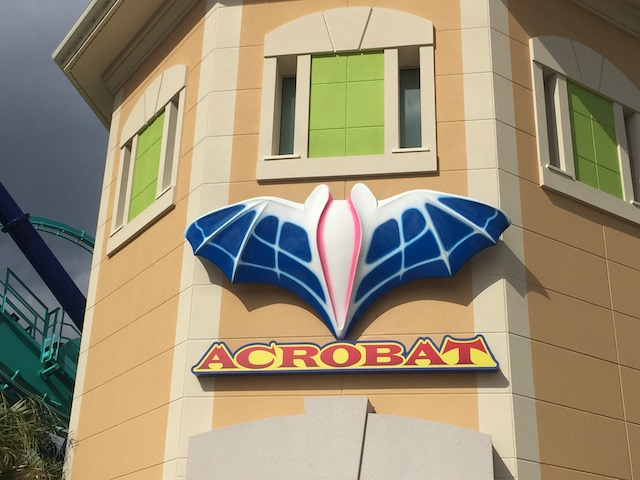

| |
Acrobat Review

We're here at Nagashima Spaland. Today's ride we'll be reviewing for you is Acrobat. Now with all of Nagashima Spaland's impressive coaster collection. Hakugei (which I assume is amazing), Steel Dragon 2000, one of the few Ultra Twisters ever, some old school Schwarzkoph classics that are a dying breed. But wait. Something is missing. But what? Yeah. Nagashima Spaland also has a B&M Flyer at the park. More specifically, they have a clone of Manta @ Sea World Orlando. But since I have yet to get to Sea World Orlando (I am REALLY overdue to go back to Florida). So it doesn't get a ton of attention due to being a clone of Manta. But it's still a lot of fun. So yeah. Let's get riding. We hop in the seat, pull down the rubber vest, go into flying position, and away we go! We roll out of the station, and begin climbing the lifthill. It doesn't look that big since....Steel Dragon is right there and....that destroys any sense of height this thing would've had. Oh well. We reach the top, crest the lift hill, and begin to head down the first drop. It's not super big, just a standard first drop on a B&M Flyer. If anything, it's kind of like that on Superman: Ultimate Flight. Don't worry. This ride is much better. Plus, this first drop does have a little more speed than the Ultimate Flight clones. We then head up into the pretzal loop. This is pretty much the highlight of (almost) all the B&M Flyers. And on Acrobat....that's no exception. While this pretzal loop isn't nearly as strong as the ones on Flying Dinosaur and Tatsu, it still is a lot of fun. And it is stronger than the ones on the Ultimate Flight clones. And from this point on, this is where all the similarities between Acrobat and the Ultimate Flight clones stops. We then head around a turn and that leads right into an inline twist. Ahh. I like it when my flying coasters do more things after their pretzal loops. ;) We then head into a downward curved drop, wave hello to Steel Dragon and the parking lot on the way down. We then head into a corkscrew. Now corkscrews on flying coasters are different from other corkscrews. These don't have any whip to them and aren't snappy in any way. They're very floaty and almost feel like the inline twists, just a little wider and with a little more elevation. But regardless, it's still a ton of fun. Watch out for the brake run as we rise up, giving us a near miss feeling, and glide right into the mid course brakes. You know....it is! This (and Manta) are the only B&M Flyers that actually bother having one. A little bit of a bummer, but no big deal. We dip down to the ground, fly right over a sort of pond, and going through a curve. Now this may seem like nothing on the ride, but for those off the ride, this is the famous Manta water splash. On Manta, it makes sense because, it's themed to a Manta, and it's gliding on the water. This makes perfect sense. Here....it's just copied and pasted because it is an EXACT clone of Manta. They even kept that one weird support that was modified to accomodate the paths at Sea World Orlando (Never been to the park). But when they made the clone for Nagashima Spaland, they just left the weird support! I understand why, but I still find it amusing. We then head into a sort of banked turn. Nothing special or crazy, but we're still having fun. This leads us into the final inline twist. Yeah. These things are a lot of fun, and are kind of floaty. Go through a low to the ground turn, rise up, and hit the brake run. Yeah. It may not be the best thing ever or the most unique ride out there, but it's still a lot of fun. I know it's easy to get jaded about B&M Flyers in Japan since...Flying Dinosaur is just 2 JR trains, and a couple metro lines, and just 3 hours away. And that ride is SO much better. Now as for the Tatsu vs Manta debate, people are split. Well (Tatsu vs Acrobat for me)...hard to say. I go back and forth between which of the two is better. Tatsu has the clearly superior pretzal loop, and the height on the mountain gives it more of a flying feeling. But the other inversions on ACrobat are better. Hmm. Hard to choose. Well, regardless, make sure to hit Acrobat when visiting Nagashima Spaland.
8/10
Location: Nagashima Spaland
Opened: 2015
Built by: B&M
Last Ridden: October 31, 2018
Acrobat Photos






Home
|